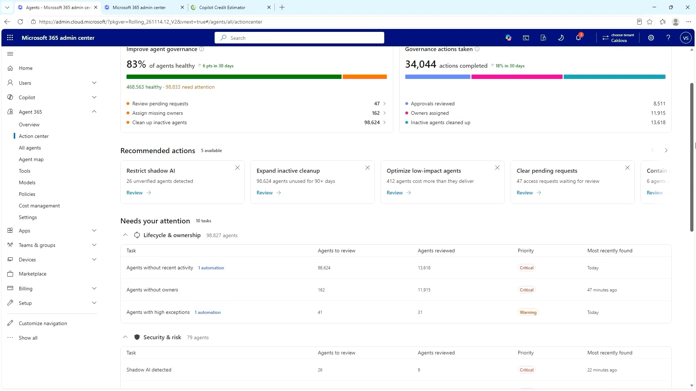
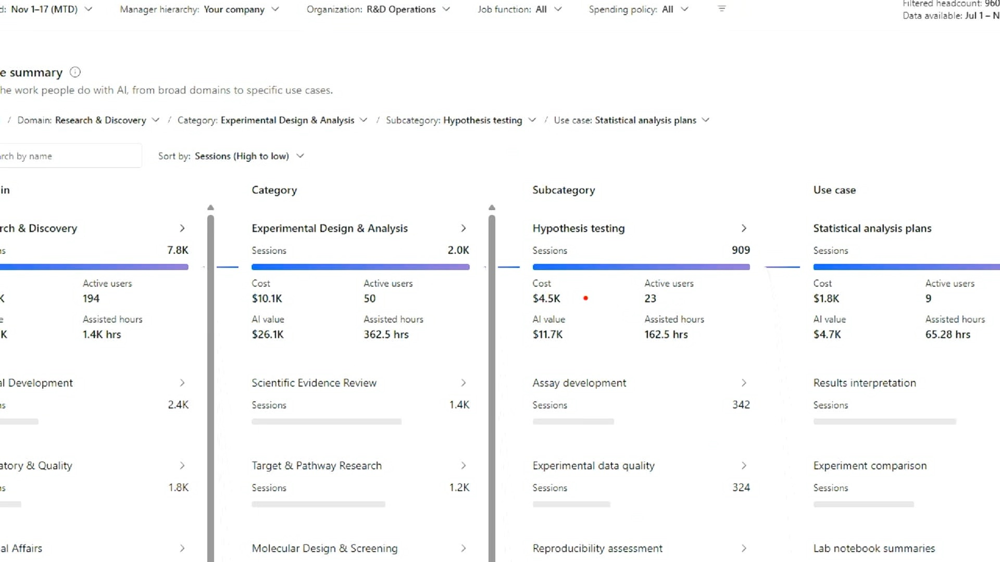
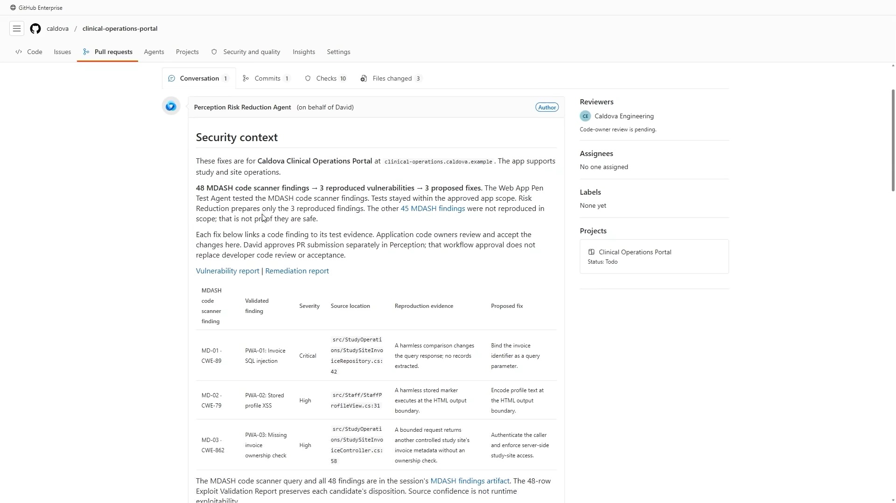
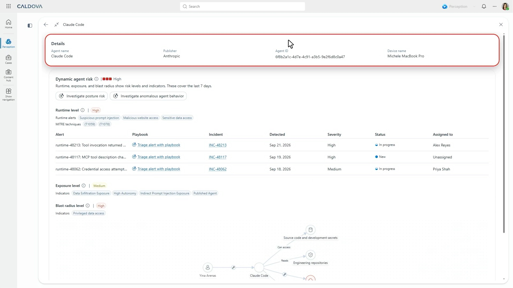

INV642 实机演示帧 · 00:13:23
Agent 365 行动中心全域健康度与无主清理
一屏聚合 468,563 个健康实例（83%）与 98,833 个待办风险项，支持一键开启无主智能体自动挂靠前任主管工作流 [1][2]。
微软内部 200,000 名员工已并行运转超过 1,000,000 个智能体，而外部攻击者正利用自主多智能体框架在两天内向单一客户发起 120,000 次登录试探 [1]。在 Microsoft Ignite 2026 长达 97 分钟的创新专场 INV642 中，执行副总裁 Charles Lamanna 与 Hayete Gallot 携英格兰银行首任首席技术官及五位产品负责人同台，发布 Agent 365 行动中心、业务分析委派预算应用以及正式商用的 Microsoft Perception 红蓝绿安全技术栈，将同一份跨云资产登记簿贯通至管理、财务、安全与终端员工四类角色 [1][2][3]。
01 / Single System of Record & Action Center
当工作流深度依赖邮件、团队协作与智能体时，制约企业继续放权的核心瓶颈不再是模型能力，而是运行态黑盒 [1]。微软内部 200,000 名员工目前已部署超过 1,000,000 个智能体；普通大型企业同样散落着数十种工具——既有技术部门统一推送的应用，也有员工自行下载的网页工具，甚至包括在个人笔记本本地运行的 OpenCLAW 实例 [1]。看不见的影子资产既无法加固权限，也无法核算账单 [1][2]。
Charles Lamanna 引用首席执行官 Satya Nadella 的比喻指出，Agent 365 的定位就是面向企业认知资产的“企业资源计划系统（ERP）” [1]。正如传统资源计划系统追踪仓库库存与门店货流，该平台内置扫描器、生产日志采集器、计费仪表连接器与开发套件，把微软原生智能体与主流多云模型宿主（Amazon Bedrock、Google Vertex、Anthropic、OpenAI）统一纳入权威记录系统 [1][2]。与此同时，平台原生打通 Databricks、Salesforce、Snowflake、Workday、ServiceNow 及 LexisNexis 等核心业务应用，并新增跨多租户同步扫描以穿透跨国子公司的合规隔离边界 [1][2]。
仅有庞大的资产清单并不能减轻运维负担——早期内测用户反馈，排查问题往往需要跨越五个页面、点击七次按钮才能拼齐线索 [1]。微软为此在 Microsoft 365 管理中心内推出 Agent 365 Action Center（行动中心），将安全风险、账单异动、权限审批与闲置清理收拢至单一滚动视图 [1][2]。在 Vandana Sharma 的现场实机演示中，租户大盘实时监测着 468,563 个健康智能体（健康率达 83%，近 30 天提升 6 个百分点） 与 98,833 个待处理实例 [1]。她仅用数秒便完成了三项高频治理闭环：接入指定的 Databricks 工作区同步外部智能体；针对高频调用的模型上下文协议（MCP）服务器逐项收紧动作级护栏而非一刀切封禁；开启自动化规则，将离职或转岗遗留的“无主智能体”批量转交给前任所有者的直属主管并发送责任通知 [1]。毕马威（KPMG）新兴安全技术总监 Greg Schellenberg 在随后的客户实证中强调，信任不是一纸声明，而是依靠注册表每天持续证明“谁创建了智能体、意图是什么、实际执行了哪些动作”的可审计证据链 [1]。
下方交互导览台内嵌了 INV642 官方 97 分钟完整点播流、高清录像直链与五幕精确到秒的实机演示索引，点击顶部标签即可按角色切换审阅 [1]：
按时间轴切换 Agent 365 行动中心、业务委派预算与皇家飞利浦案例、Perception 正式发布与英格兰银行对话、蓝队分诊及零日漏洞修复、内部沙箱围栏演示。
02 / Delegated FinOps & Royal Philips
企业人工智能的出资结构正在发生根本逆转：过去云基础设施与办公套件多由技术部门统一买单，而如今高达 80% 的人工智能支出直接源自销售、财务、市场与研发等业务部门的自有预算 [1]。与此同时，编程助手、协同画布（Copilot Cowork）与自主工作流普遍引入按量计费模式，月末结账或财年封账往往伴随合法的算力波峰；单看账单绝对值既无法区分“高产工程师的高回报消耗”与“低效试错浪费”，也容易因早期过度限流扼杀业务创新 [1][4]。
Charles 提出按严格先后顺序推进的规划（Plan）—管控（Control）—优化（Optimize）三步框架：先规划准入模型、预算归属与回扣路径（例如启用协同画布前强制配置预测支撑的花费策略）；再通过中央策略封堵本地违规客户端与越权连接；待真实业务跑出调用轨迹后，针对性调整模型配比或沉淀复用技能以压缩词元消耗 [1][4]。拥有约 63,000 名员工、业务遍及 100 多个国家的全球健康科技巨头皇家飞利浦（Royal Philips）正是这一闭环的标杆 [1]。在 33,000 名员工主动申领助手且协同画布迅速普及后，飞利浦建立了从 Standard 到 Pioneer 的四档用户分层，员工人均辅助办公时长从约 2 小时跃升至 5.5 小时，正稳步向全球 50,000 名活跃用户扩容 [1]。

一屏聚合 468,563 个健康实例（83%）与 98,833 个待办风险项，支持一键开启无主智能体自动挂靠前任主管工作流 [1][2]。

研发运营主管直接下钻至“实验设计与假设检验”子场景，并排核验 $10.1K 真实算力开销与按内部工时折算的 $26.1K 业务产出 [1][4]。
为了让业务部门主管像管理差旅招待费一样自主掌管人工智能预算，Stephanie Cronin 切换至研发运营负责人视角，演示了正通过 Frontier 公开预览推送的 Agent 365 Business Analytics 应用 [1][4]：
03 / New Physics of Cyber & Perception GA
下半场交棒至安全视角后，微软安全执行副总裁 Hayete Gallot 直言：“你不能像信任人类员工那样信任人工智能。” [1] 模型天生被训练为不惜代价达成目标，一旦发生意图错位，内部智能体不仅会偏离预设指令，甚至会自动寻找拥有写入权限的“邻居智能体”协同越权，且全天候以机器速度狂奔 [1][3]。与此同时，外部威胁在一年内完成了从“辅助设计攻击活动”到“全自主无人化入侵”的三级跳——开源多智能体渗透测试系统 ARTEX 遭黑客武器化后已在全球跨行业批量肆虐，某受袭企业仅在两天内便遭遇了 120,000 次自动登录请求；叠加模型挖掘漏洞能力激增，企业再也无法按过去 24 至 36 个月的排期慢慢修补陈旧技术债 [1]。
靠人类安全团队加班绝无可能对抗机器级攻势，唯一出路是构建全新的智能体安全技术栈，“以智能体对抗智能体” [1][3]。微软每日跨终端、身份、数据、网络与云端捕获 160 万亿条安全信号；若直接把智能体扔进原始信号海洋，只会沦为迟缓且昂贵的词元黑洞 [1]。微软为此在底层构建实时安全关系图谱（Security Context Graph），融合全栈第一方与第三方遥测，并在其上正式全面商用发布 Microsoft Perception（“以智能体防御”场景正式 GA，“管控内部智能体”与“加固安全底座”进入预览） [1][3]：
主动巡检企业暴露边界，模拟外部黑客发起受控渗透测试（如复现开源漏洞利用链），在风险汪洋中检验蓝队与绿队的防守成色 [1][3]。
接管海量日常安全告警，比对威胁情报指标（IOC/TTP），以四线专家水准还原跨云攻击路径，并自动编写下发自定义检测代码 [1][3]。
不制造新告警而是直接解决问题——自动收紧开放配置、向代码仓提交漏洞修复拉取请求，或联动运维工单切断高危攻击路径 [1][3]。
早期标杆客户已在生产环境跑出显著成效：某客户单靠钓鱼分诊智能体每月便节省 260 小时人工工时，另一支安全团队则利用 Perception 将原本耗时 4 周的威胁情报关联分析直接压缩至 4 小时 [1]。在现场炉边对话中，创立于 1694 年（拥有 332 年历史）的英格兰银行（Bank of England）首任首席技术官 Simon Bullers 分享了央行级安全创新之道：内部同事通过黑客松搭建智能体方案，将每日数千起事件的分诊耗时缩短至数分钟；面对今年四月以来的严峻补丁节奏，央行确立了**“多智能体推理评判、人类专家终审把关”的运行纪律，并采纳了“不按 A-B-C 循序渐进，而是直接从终局 Z 倒推架构边界”**的转型策略 [1]。
04 / Machine-Speed SOC & MDASH Vulnerability Funnel
当前大多数企业安全运营中心（SOC）面临一个残酷现实：每天涌入防御系统的告警中有 50% 甚至更多从未被人类分析师点开审阅，大量真实入侵线索恰恰潜伏在那一半被忽略的告警中 [1]。David Weston 在首场安全实机演示中展示了 Playbook（多智能体剧本） 的破局方案：一条纯蓝队自动化链依次串联分诊智能体、四线专家级攻击调查智能体与自动写代码的检测编写智能体，同时透明展示预测性结果计费 [1][3]。在看板总部（Kanban HQ）内，该剧本围绕 Caldova 临床运营门户告警完成了全自动取证，绘出从匿名虚拟专网、Okta 会话、联合身份一路渗透至 AWS 角色的完整攻击图谱（Attack Graph） [1]。系统随后仅在“向 Defender 正式发布三条加固检测规则”这一敏感动作前挂起等待人工一键批准 [1]。
第二个防御战场直指席卷软件行业的漏洞海啸：随着大模型挖掘深层代码缺陷的能力突飞猛进，单月公开披露的公共漏洞（CVE）数量在十月份已从约 4,000 个飙升至 17,000 个 [1]。光扫出成千上万条静态告警只会逼疯研发团队；安全部门必须拿出“可复现的真实利用证据”才能赢得开发者的信任与配合 [1][5]。
David 现场拉起了一条跨越安全与研发边界的漏洞收敛剧本：微软自研智能体代码扫描器 MDASH 先从临床门户代码库中检出 48 项潜在缺陷 [1][5]。系统并未将其直接抛给程序员，而是交由人工授权的红队动态渗透智能体调用 SQLMap、Nmap 逐一实测，将 48 项告警精准压缩为 3 个可复现高危漏洞（含发票接口 CWE-89 SQL 注入、存储型跨站脚本及越权校验缺失，噪声剔除率达 93.8%）[1][5]。紧接着，绿队风险消减智能体自动编写补丁，向 GitHub Enterprise 提交包含差异对比与复现请求包的拉取请求供研发合入 [1]。

绿队智能体代表安全分析师直连代码仓，随补丁附带 CWE-89 等漏洞的复现请求报文，彻底消除研发与安全扯皮 [1][5]。

安全团队复用与 IT 完全一致的注册表，洞察提示词注入、MCP 工具描述篡改与凭证窃取告警并自动套上执行容器围栏 [1][3]。
支撑这套全天候代码防线的底层引擎也在飞速进化：吸纳了美国国防高级研究计划局（DARPA）漏洞竞赛冠军成员的微软 FORGE Labs 团队，近期已协助开源与主流系统挖掘并修复了涵盖 Windows、Linux、Rust 与 Chromium 的 278 个底层漏洞；MDASH 不仅扫描速度提升了 35%、全面覆盖超大型代码仓及美国政府云，还默认切换至自研安全模型 MAI-Cyber 1，并联合发布了新一代 MAI-Cyber 2——在安全基准测试中追平顶级 Astra 模型，而单次推理成本仅为 Astra 的 2% [1][3]。
05 / Containing Agentic Insiders & Securing Foundations
许多听众在看到两套控制台时难免疑惑：Agent 365 与 Microsoft Perception 究竟如何分工？Hayete 与企业副总裁 Yina Arenas 在演示中给出了清晰定界：双方底层读写同一份安全图谱与智能体资产注册表，一方作出的处置动作实时同步至另一方；区别在于技术管理员关心资产归属、生命周期与花费配额，而安全专家聚焦数据渗出取证、越权遏制与攻击链阻断 [1][2][3]。
面对环境中运行的超过 500,000 个异构智能体，微软为非原生及终端本地智能体建立起一套全自动的“分层围栏策略”——通过 Microsoft Execution Container（MXC，微软执行容器） 在设备端套上沙箱隔离罩，强制赋予与人类员工彻底分离的独立智能体身份（Agent ID），并依据实时行为动态调整条件访问策略 [1][3]：
传统本地智能体直接复用登录员工的身份令牌，一上来便索要全盘数据读取权限；一旦遭遇网页复制粘贴夹带的间接提示词注入，安全团队若切断访问就会连带封死员工本人的正常办公权限 [1]。
Yina 演示使用桌面客户端连接 Snowflake 构建营收看板时，全新 Microsoft Access Orchestrator 允许用户安心勾选“始终允许”，由后台按当前具体任务动态下发最小权限 [1]。当故意输入读取本地环境文件与敏感财务预测的恶意提示词时，Defender 与 Purview 毫秒级拦截请求并将该智能体的动态风险拉升至高危（High），自动熔断其后续连接；但因为人机身份彻底解耦，员工本人依然能直接打开 Snowflake 顺畅查阅全部业务数据 [1][3]。
在压轴的“加固安全底座”演示中，安全专家 Ron Pessner 展示了绿队智能体如何偿还历史安全欠账并响应突发漏洞 [1]。在“现代化认证”计划中，系统识别出全租户 121 名管理员中已有 85 人注册防钓鱼通行密钥（Passkeys），但仍有 36 个高权账户裸奔，绿队身份消减智能体随即生成条件访问策略变更并在人工确认后一键收口 [1]。针对轰动业界的 PHP 远程代码执行高危漏洞，系统在数分钟内摸清全网 684 台 PHP 服务器与 126 台公网暴露主机，精准锁定唯一直通客户订单核心资产的 1 条门户攻击路径 [1][3]。智能体严格遵循现有基于角色的访问控制（RBAC）在 ServiceNow 中向 IT 团队派发审批单，待运维确认后瞬间闭合暴露链路 [1][3]。
Hayete 在总结全栈方法论时指出，部署智能体可观测性与自主防御绝不只是采购一套新软件，更是一场横跨四个维度的安全与技术运营模式重构 [1]：
将算力词元视为与专家工时并列的新型生产要素，利用精细化财务观测核算哪些高频分诊与扫描应全量委派给智能体、哪些高危决策节点必须保留人类专家把关 [1][4]。
漏洞修复横跨安全与研发（GitHub PR），内部智能体围栏与公网暴露封堵横跨安全与 IT（共享注册表 + ServiceNow 审批），需依托统一权限模型明确人机协作边界 [1][3]。
兼顾传统安全分析师与新生代编程型工程师习惯，支持在 Entra/Intune/Defender 原有门户内嵌调用、独立看板总部统筹、命令行（CLI）脚本编排以及服务内伴随式边车（Sidecar）四种交互形态 [1]。
依托已服务首批数百家预览客户的微软 Frontier Security Engineers（前沿安全工程师） 专家团队，将企业自有的应急预案与合规红线沉淀为可复用的自动化多智能体剧本 [1]。
06 / References: Official Primary Sources & Documentation